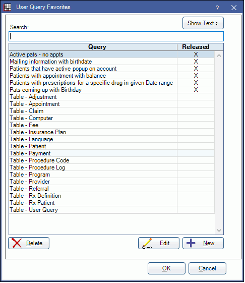
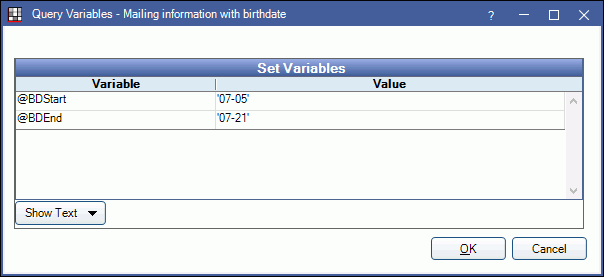

Query Favorites
User queries can be saved to quickly access again later.
In User Query, click Favorites.
Alternatively,
- In the Main Menu, click Reports, User Query Favorites.
- In Advertising - Select Patients, check User Query. Click Favorites.
Query Favorites is a place to store frequently used queries, run queries, and control user access to queries. From here you can run, add, edit, and delete query favorites. Only queries a user has access to will display.
Security permissions control how much access a user has to queries.
- User Query: User can only view and run released queries from the Query Favorites list.
- User Query Admin: User can run all queries, as well as add, edit, or delete query favorites.
Search: Type a keyword in the search to narrow results.
Show Text: Click to view the query text for the selected query. The text will display on the right.
- Hide Text: Click to hide query text.
- Wrap Text: Check to wrap query text.
Delete: Click to delete the selected query from the list.
Edit: Click to edit the query. See Add or Edit a Query Favorite below for details.
+ New: Click to add a new query. See Add or Edit a Query Favorite below for details.
Released: The Released column determines which queries are available to users without the User Query Admin permission. Check or uncheck queries as needed.
Add or Edit a Query Favorite
Click Add to add a new query favorite. Highlight a query and click Edit to edit query details. The Edit Favorite window will open.

- Title: Enter the title of the query.
- Released: Determines who can run and edit this query.
- Checked: This query can be run by users with the User Query permission.
- Unchecked: This query can only be run and edited by users with the User Query Admin permission.
- Prompt for SET statements:
- Checked: Prompt the user to define user variables (e.g. date range, providers, etc.).
- Unchecked: Do not prompt the user to define user variables. Change variables in the Query Window instead.
- Query Text: Copy/paste or change the query text as needed. For a list of existing queries, see Query Examples.
- Export File Name: Optional. Enter the default file name to use when this query data is exported.
Run a Favorite Query
Double-click a query from the list to run the report.
- If there are no SET statements, or Prompt for SET statements is unchecked, the User Query window will open.
- If Prompt for SET statements is checked and the query contains a SET statement, the Query Variables window will open.

Enter values, then click OK to view the report.